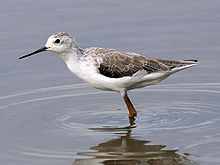
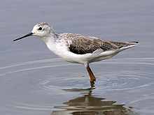

| Marsh Sandpiper | |
|---|---|
|  | |
| Winter plumage | |
| Conservation status | |
| Binomial name | |
| Tringa stagnatilis (Bechstein, 1803) |
| Marsh Sandpiper | |
|---|---|
|  | |
| Winter plumage | |
| Conservation status | |
| Binomial name | |
| Tringa stagnatilis (Bechstein, 1803) |
The Marsh Sandpiper, Tringa stagnatilis, is a small wader. It is a rather small shank, and breeds in open grassy steppe and taiga wetlands from easternmost Europe to central Asia.
It resembles a small elegant Greenshank, with a long fine bill and very long yellowish legs. Like the Greenshank, it is greyish brown in breeding plumage, paler in winter, and has a white wedge up its back that is visible in flight. However, it is more closely related to the Common Redshank and the Wood Sandpiper (Pereira & Baker, 2005). Together, they form a group of smallish shanks which tend to have red or reddish legs, and in breeding plumage are generally a subdued, light brown above with some darker mottling, with a pattern of somewhat diffuse small brownish spots on the breast and neck.
It is a migratory species, with majority of birds wintering in Africa, and India with fewer migrating to Southeast Asia and Australia. They prefer to winter on fresh water wetlands such as swamps and lakes and are usually seen singly or in small groups.
These birds forage by probing in shallow water or on wet mud. They mainly eat insects, and similar small prey.
The Marsh Sandpiper is one of the species to which the Agreement on the Conservation of African-Eurasian Migratory Waterbirds (AEWA) applies.

{kind=link}
_in_Hyderabad,_AP_W_IMG_2400.jpg){kind=link}